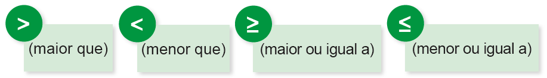
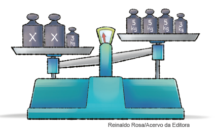
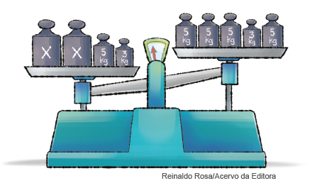
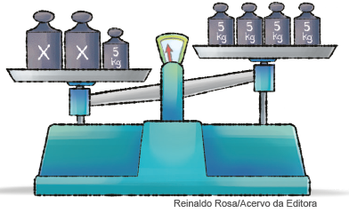
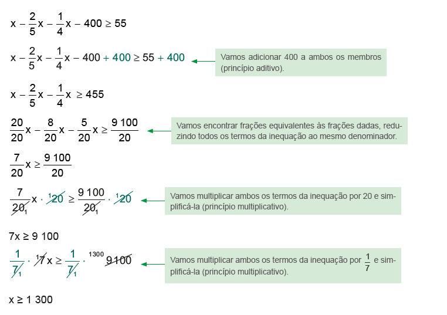
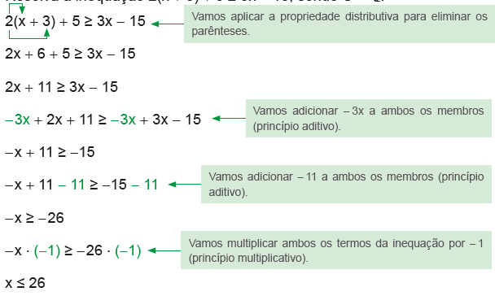
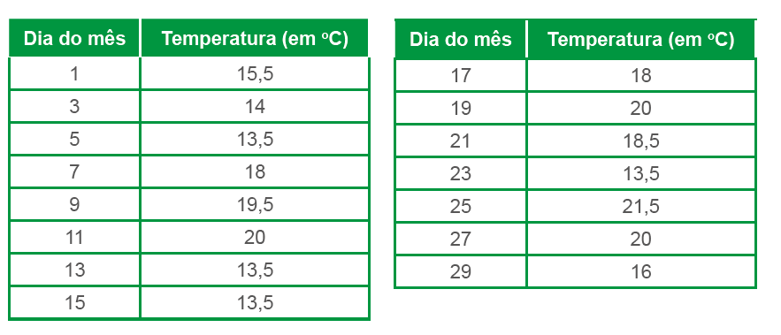
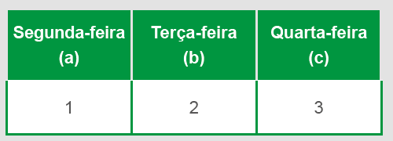
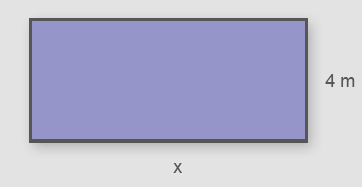
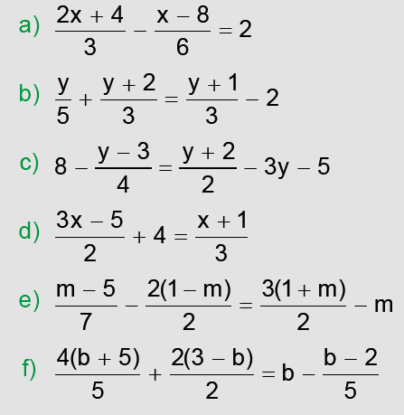

166
UNIDADE 5 - CAPÍTULO 4
Capítulo 4 - Inequações
Observe as balanças abaixo:
Balança A
Balança B

1. Troque ideias com um colega e respondam no caderno:
a) A balança A está em equilíbrio? Qual é a sentença matemática que representa essa situação?
b) Comparando a balança A com a balança B, o que se pode observar?
c) A balança B está em equilíbrio? Qual é a sentença matemática que representa essa situação?
Na balança B, há um desequilíbrio, ou seja, uma desigualdade.
Os símbolos utilizados para representar uma sentença de desigualdade
são:
 (maior que); < (menor que); ≥ (maior ou igual a); ≤ (menor ou igual a). Abaixo a expressão: 2x = 10. Uma flecha sinalizada o 2x como primeiro membro. Outra flecha sinaliza o 10 como segundo membro. " />Em uma desigualdade, também há o 1.º e o 2.º membro.
1.º membro ⟶ 2x > 10 ⟵ 2.º membro
A desigualdade que traduz essa situação chama-se inequação.
Uma sentença matemática expressa por uma desigualdade, em que existe pelo menos uma letra representando um número desconhecido, é denominada inequação.
167
UNIDADE 5 - CAPÍTULO 4
Princípios de equivalência das desigualdades
► Princípio aditivo
A balança representada abaixo está desequilibrada.
x + x + 3 > 5 + 5 + 5 + 3
Vamos acrescentar uma massa de 5 kg a cada um dos pratos.
x + x + 3 + 5 > 5 + 5 + 5 + 3 + 5
Note que o desequilíbrio permanece o mesmo.
Agora, vamos retirar uma massa de 3 kg de cada prato.
x + x + 5 - 3 > 5 + 5 + 5 + 5 - 3
Mesmo retirando uma massa de 3 kg de cada prato, o desequilíbrio permanece o mesmo.
Quando adicionamos ou subtraímos um mesmo número aos dois membros de uma desigualdade, obtemos uma nova desigualdade, equivalente à primeira e com o mesmo sentido dela.
168
UNIDADE 5 - CAPÍTULO 4
► Princípio multiplicativo
Considere a desigualdade 12 > 8.
Vamos multiplicar ambos os membros pelo número positivo 3.
3 ∙ 12 > 3 ∙ 8
Temos uma nova desigualdade, que é equivalente à primeira e apresenta o mesmo sentido dela.
36 > 24
Em seguida, dividimos ambos os membros pelo número positivo 2.
36/2 > 24/2
18 > 12
A nova desigualdade é equivalente à anterior e apresenta o mesmo sentido dela.
Quando multiplicamos ou dividimos uma desigualdade por um número positivo obtemos uma nova desigualdade, equivalente à primeira e com o mesmo sentido dela.
E, quando multiplicamos ou dividimos uma desigualdade por um número negativo, o que acontece com o sentido?
Vamos considerar novamente a desigualdade 12 > 8.
Multiplicamos ambos os membros pelo número negativo - 1.
12 ∙ (- 1) < 8 ∙ (- 1)
- 12 < - 8
Note que, ao resolver a multiplicação por um número negativo, obtemos uma nova desigualdade, que tem sentido contrário ao da primeira.
Agora, vamos dividir a desigualdade - 12 < -8 pelo número negativo - 2.
-12/-2 > -8/-2
6 > 4
A nova desigualdade tem sentido contrário ao da desigualdade anterior.
Quando multiplicamos ou dividimos uma desigualdade por um número positivo obtemos uma nova desigualdade, equivalente à primeira e com o mesmo sentido dela.
169
UNIDADE 5 - CAPÍTULO 4
Resolvendo inequações com uma incógnita
Situação 1
Mário está procurando emprego. Ele pretende receber um salário que lhe permita gastar 2/5 com alimentação; 1/4 com água, luz, telefone e gás; R$ 400,00 com vestuário e lazer e do qual sobrem, pelo menos, R$ 55,00 após o pagamento de todas as despesas. Quanto deve ser, no mínimo, o salário que Mário pretende receber?
Vamos representar essa situação por meio de uma inequação, na qual x represente o salário.
x - 2/5x - 1/4x - 400 >= 55
Resolvendo a inequação, podemos saber o valor do salário que Mário pretende receber.
Portanto, Mário está procurando um emprego que pague um salário de, no mínimo, R$ 1.300,00.
170
UNIDADE 5 - CAPÍTULO 4
Situação 2
Resolva a inequação 2(x + 3) + 5 ≥ 3x - 15, sendo U = Q.
Todo número menor ou igual a 26 é solução da inequação, ou seja, S = {x ∈ Q| x ≤ 26 }.
Encontre soluções
1. Uma avaliação de Língua Portuguesa tem 12 questões. Um aluno deixou de fazer 4 questões. Que inequação representa a quantidade x de possíveis questões respondidas corretamente por esse aluno?
2. Carolina tem R$ 5,25 para comprar uma revista em quadrinhos. Representando por r o preço dessa revista, escreva a sentença matemática que indica o seu custo.
3. A capacidade de um reservatório de água é maior que 250 litros e menor que 300 litros. O número x de litros que há nesse reservatório satisfaz a inequação x/2 + 1 < 127. Quantos litros de água há nesse reservatório?
4. Copie o quadro abaixo e complete-o com as informações que estão faltando.
|
Variável |
Inequação |
|
|
Yasmim tem mais de |
Quantia de dinheiro que Yasmim tem: ■ |
|
|
Um número é menor ou igual a 15. |
O número é: ■ |
|
|
A metade da minha idade é menor que 18 anos. |
Minha idade é: ■ |
|
171
UNIDADE 5 - CAPÍTULO 4
5. Resolva as inequações a seguir, sabendo que
a) x - 8 > -3
b) 4x + 7 <= x - 5
c) 3(2x - 1) < 5x + 6
d) x + 2(x + 1) ≥ -x - 7
e) 2(x - 3) - 4(x + 1) < 20 + x
f) 2/3+ 5 > x + 1/2
g) 1/6x + 1/3 < x + 10
6. Um caminhão de transporte de gás doméstico tem capacidade de transportar x metros cúbicos. Ele fará a distribuição do gás a três condomínios residenciais. O primeiro condomínio foi abastecido com 5/21 do total de gás que o caminhão transportava; o condomínio seguinte, com 3/17 do gás; e o terceiro condomínio, com os 11 m³ restantes. Sabendo que o caminhão saiu cheio para a distribuição, podemos afirmar que x é tal que:
a) x < 18
b) 15 < x < 16
c) 18 < x < 19
d) x > 20
7. Leia o texto informativo:

O Procon é um órgão integrante do Sistema Nacional de Defesa do Consumidor e tem como objetivo desenvolver ações de caráter pedagógico e preventivo, além de buscar a solução de conflitos entre consumidores e fornecedores.
Muitos consumidores recorrem ao Procon para defender seus direitos em situações em que se sentem lesados. Para evitar problemas ao contratar determinado serviço ou comprar um produto, é importante que o consumidor tenha clareza do que está adquirindo. Por isso, a leitura de documentos no momento de assiná-los e a solicitação de informações sobre o serviço prestado ou o produto comprado são imprescindíveis.
Tomando esses cuidados, você poderá assegurar os seus direitos previstos no Código de Defesa do Consumidor. Se houver alguma dúvida em relação ao produto que comprará, ao serviço que adquirirá ou à empresa que prestará o serviço, procure obter mais informações no Procon de sua região. É essencial saber analisar e compreender as situações que ocorrem no dia a dia, pois assim, podemos recorrer aos nossos direitos.
A seguir, são apresentadas situações relacionadas à prestação de serviços em alguns segmentos. Discuta-as com um colega e apresentem justificativas para as conclusões a que vocês chegarem, registrando-as no caderno.
172
UNIDADE 5 - CAPÍTULO 4
a) Vânia procurou uma agência de locação de veículos para alugar um carro. A agência oferece dois sistemas de cobrança:
I. O cliente paga uma taxa fixa de R$ 150,00 por dia, sem limite de quilômetros percorridos.
II. O cliente paga uma taxa fixa de R$ 90,00 mais R$ 1,50 por quilômetro rodado.
► Vânia precisa do carro para ir de uma cidade para outra e deverá percorrer 45 km nessa viagem. Neste caso, qual das duas opções é a mais vantajosa? Em que situação a outra opção seria melhor?
b) Uma locadora de filmes on-line propõe a seus clientes duas opções de pagamento, como mostra o anúncio ao lado.
► Uma cliente escolheu a opção I e gastou R$ 104,00 no ano. Neste caso, ela escolheu a melhor opção de pagamento? Justifique sua resposta.
c) Marcela está interessada em adquirir um plano de telefonia celular. Ela pesquisou o preço em duas empresas. Na empresa A, a mensalidade era de R$ 16,00 mais o custo de R$ 0,60 por minuto de ligação. Na empresa B, a mensalidade era de R$ 24,00 e o custo por minuto de ligação, de R$ 0,40. Comparando as condições das duas empresas, o que Marcela pode concluir em relação aos serviços oferecidos? Em que situação ela deve optar pela empresa A? E pela empresa B?
173
UNIDADE 5 - CAPÍTULO 4
Probabilidade e estatística
► Moda e mediana
Doenças
As doenças podem ser provocadas por agentes agressores externos, como microrganismos e fatores ambientais, ou internos, como desiquilíbrios hormonais ou disfunções metabólicas. As causas internas podem surgir de características hereditárias - transmitidas pelos genes -, problemas congênitos - relativos a má-formação do feto - ou do próprio desgaste natural do organismo no decorrer da vida. Más condições de nutrição, falta de estrutura sanitária e maus hábitos de vida são fatores que predispõem um organismo a distúrbios e moléstias.
Para prevenir determinada doença ou distúrbio, é preciso conhecer as suas causas e desenvolver controles sobre elas. Doenças provocadas por disfunções de origem hereditária ou por problemas congênitos dificilmente podem ser evitadas - mas podem ser retardadas ou ter seus efeitos corrigidos ou minimizados. No caso das doenças adquiridas, é possível, na maior parte das vezes, evitar seu desenvolvimento impedindo que o agente agressor entre em contato com o corpo humano ou aumentando a resistência do organismo ao ataque desse agressor, por meio da imunização.
ALMANAQUE ABRIL 2015. São Paulo: Editora Abril, 2015, p. 148.
Veja no gráfico a seguir as nove doenças que mais matam no Brasil.
![Gráfico de barras horizontais, intitulado: Comparação entre números e mortes por Covid-19 e por outras causas. As barras representam a quantidade de mortes durante o período de 12/03/2020 a’ 11/03/2021. Eixo horizontal, referente a quantidade de mortes, apresentadas em escala de 50.000, com início no 0, a partir da base, e término em 300.000. Eixo vertical, referente às doenças, a partir da base: covid 19, infarto, pneumonia, diabetes, câncer de pulmão, câncer de cólon, câncer de mama, HIV, doença de chagas, hepatite viral e dengue. Dados do gráfico: Covid: 275.105; Infarto: 93.289; Pneumonia: 80.279; Diabetes: 63.270; Câncer de pulmão: 27.955; Câncer de cólon: 18.689; Câncer de mama: 16.967 HIV: 11.770; Doença de chagas: 4.431; Hepatite viral: 2523; Dengue: 627. Fonte: Dados de mortalidade no Brasil - DataSus - Mortes por Covid 19 entre 12/03/2020 e 11/03/2021.](../../resources/images/unidade5/85.PNG)
1. Em sua opinião, quais dessas doenças poderiam ser minimizadas e de que forma?
2. De acordo com o gráfico, escreva em seu caderno a quantidade de pessoas que morrem anualmente, desconsiderando as que morreram por Covid-19.
3. De todos os números que aparecem, um deles encontra-se no meio desse conjunto. Qual é esse número?
174
UNIDADE 5 - CAPÍTULO 4
Em um conjunto de valores, o valor que ocorre com mais frequência é denominado de Moda deste conjunto e indicamos por Mo
Em um conjunto de valores, quando não há moda, dizemos que ele é amodal. Observe o exemplo:
24 37 45 58 62 79 81
Nesse conjunto de valores, não há um valor que aparece com maior frequência. Nesse caso, o conjunto é amodal.
Agora vamos colocar os valores que aparecem no gráfico em ordem crescente, observe:
1300000 1500000 1500000 1500000 1600000 3100000 3100000 6700000 7400000
Neste conjunto de valores, podemos observar que há um valor central. Esse valor recebe um nome especial, denomina-se mediana de um conjunto de valores. Nesse caso, 1 600 000 é a mediana desse conjunto de valores.
Em um conjunto de valores ordenados, o valor que encontra-se no meio desse conjunto é denominado Mediana e é indicado por Me
A palavra mediana tem origem no latim e significa “o que está no meio”. Observe o conjunto de valores:
34 21 45 58 55 82 63 67
Para determinarmos a mediana, primeiramente vamos colocar os valores em ordem crescente:
21 34 45 55 58 63 67 82
Nesse caso, os valores centrais são 55 e 58. Logo, para determinarmos a mediana devemos calcular a média aritmética entre 55 e 58.
Me = 55+58/2 = 113/2 = 56,5
A mediana nesse conjunto de valores é 56,5.
A média, a mediana e a moda são denominadas medidas de tendência central. Elas são utilizadas para analisar os dados em determinadas situações.
175
UNIDADE 5 - CAPÍTULO 4
4. Mateus tem 10 amigos que sempre estudaram com ele no mesmo colégio. Observe a idade desses amigos:
12 13 12 12 13 11 10 12 13
Determine a moda e a mediana das idades dos amigos de Mateus.
5. A Seleção Brasileira de vôlei feminino participou, de 15 a 20 de setembro de 2021, do torneio sul-americano em Barrancabermeja, na Colômbia, e foi a vencedora. Saiba quem foram as jogadoras da seleção feminina de Vôlei e suas alturas:
|
Jogadora |
Altura (m) |
Jogadora |
Altura (m) |
|
MACRIS |
1,78m |
KASIELY |
1,82m |
|
ROBERTA |
1,85m |
CAROL GATTAZ |
1,92m |
|
ROSAMARIA |
1,85m |
CAROL |
1,82m |
|
LORENNE |
1,85m |
BIA |
1,88m |
|
GABRIELA |
1,76m |
MAYANY |
1,85m |
|
NATÁLIA |
1,84m |
NATINHA |
1,75m |
|
ANA CRISTINA |
1,92m |
NYEME |
1,75m |
Determine a altura mediana e a moda das jogadoras desta seleção.
6. (ENEM) O gráfico apresenta a quantidade de gols marcados pelos artilheiros das Copas do Mundo desde a Copa de 1930 até a de 2006.
![Gráfico de pontos, sem título, apresenta a quantidade de gols marcados pelos artilheiros das Copas do Mundo de 1930 à 2006. Eixo horizontal, referente a décadas, com início em 1920 e término em 2010. Eixo vertical, referente à gols, apresentados em uma escala de 2, com início em 0, a partir da base, e término em 14.
Dados do gráfico:
Copa de 1930 = Artilheiro marcou 8 gols;
Copa de 1934 = Artilheiro marcou 5 gols;
Copa de 1938 = Artilheiro marcou 7 gols;
Copa de 1950 = Artilheiro marcou 9 gols;
Copa de 1954 = Artilheiro marcou 11 gols;
Copa de 1958 = Artilheiro marcou 13 gols;
Copa de 1962 = Artilheiro marcou 4 gols;
Copa de 1966 = Artilheiro marcou 9 gols;
Copa de 1970 = Artilheiro marcou 10 gols;
Copa de 1974 = Artilheiro marcou 7 gols;
Copa de 1978 = Artilheiro marcou 6 gols;
Copa de 1982 = Artilheiro marcou 6 gols;
Copa de 1986 = Artilheiro marcou 6 gols;
Copa de 1990 = Artilheiro marcou 6 gols;
Copa de 1994 = Artilheiro marcou 6 gols;
Copa de 1998 = Artilheiro marcou 6 gols;
Copa de 2002 = Artilheiro marcou 8 gols;
Copa de 2006 = Artilheiro marcou 5 gols.
Fonte: Disponível em http://www.suapesquisa.com
Acesso em 23 abr. 2010 - Adaptado.](../../resources/images/unidade5/86.PNG)
A partir dos dados apresentados, qual a mediana das quantidades de gols marcados pelos artilheiros das Copas do Mundo?
a) 6 gols
b) 6,5 gols
c) 7 gols
d) 7,3 gols
e) 8,5 gols
176
UNIDADE 5 - CAPÍTULO 4
7. (ENEM) O quadro seguinte mostra o desempenho de um time de futebol no último campeonato. A coluna da esquerda mostra o número de gols marcados e a coluna da direita informa em quantos jogos o time marcou aquele número de gols.
|
Gols marcados |
Quantidade de partidas |
|
0 |
5 |
|
1 |
3 |
|
2 |
4 |
|
3 |
3 |
|
4 |
2 |
|
5 |
2 |
|
7 |
1 |
Se X, Y e Z são, respectivamente, a média, a mediana e a moda desta distribuição, então:
a) X = Y < Z
b) Z < X = Y
c) Y < Z < X
d) Z < X < Y
e) Z < Y < X
8. (ENEM) Uma equipe de especialistas do centro meteorológico de uma cidade mediu a temperatura do ambiente, sempre no mesmo horário, durante 15 dias intercalados, a partir do primeiro dia de um mês. Esse tipo de procedimento é frequente, uma vez que os dados coletados servem de referência para estudos e verificação de tendências climáticas ao longo dos meses e anos. As medições ocorridas nesse período estão indicadas no quadro:
Em relação à temperatura, os valores da média, mediana e moda são, respectivamente, iguais a:
a) 17°C, 17°C e 13,5°C.
b) 17°C, 18°C e 13,5°C.
c) 17°C, 13,5°C e 18°C.
d) 17°C, 18°C e 21,5°C.
e) 17°C, 13,5°C e 21,5°C.
177
UNIDADE 5 - CAPÍTULO 4
RELEMBRE
1. Em seu caderno, calcule o valor numérico das expressões a seguir:
a) a³ + a² + a + b/ 64 - 6, para a = 2 e b = 6.
b) -x² + x + 2/x - 1/3 , para x = 1.
2. (Saresp) Veja a quantidade de doces que Rose produziu:
A expressão que representa a sua produção de doces nesses dias é:
a) c = a + b
b) c = a - b
c) c = a ∙ b
d) c = a : b
3. A nota que Gilberto obteve na avaliação de Geografia é o dobro da nota de Luciana mais 3 pontos. Já a nota de Mariana é o triplo de Luciana e a mesma de Gilberto. Sendo x a nota de Luciana, escreva a equação que representa essa situação.
4. (Saresp) Zeca entrou num jogo com certo número de fichas. Na primeira rodada, perdeu a terça parte, mas na segunda rodada ganhou três fichas, ficando com 11 fichas no final. As fichas de Zeca no início do jogo eram em número de:
a)11
b)12
c)14
d)20
5. (UNIFOR-CE) Todos os 455 funcionários de uma indústria deverão ser divididos em grupos a fim de participarem de alguns cursos para a melhoria de seu desempenho pessoal. Sabe-se que:
► o número de funcionários do sexo feminino é igual a 75% do número dos do sexo masculino;
► cada grupo deverá ser composto por pessoas de um mesmo sexo;
► todos os grupos deverão ter o mesmo número de funcionários;
► cada funcionário deverá fazer um único curso.
Nessas condições, a menor quantidade de cursos que poderão ser oferecidos é:
a) 3
b) 4
c) 5
d) 6
e) 7
6. (Saresp) O preço de uma corrida de táxi é composto de uma parte fixa, chamada de bandeirada, de R$ 3,00, mais R$ 0,50 por quilômetro rodado. Uma firma contratou um táxi para levar um executivo para conhecer a cidade, estipulando um gasto menor que R$ 60,00. O número x de quilômetros que o motorista do táxi pode percorrer nesse passeio é representado por:
a) x < 50
b) x < 60
c) x < 114
d) x < 120
178
UNIDADE 5 - CAPÍTULO 4
7. Juliane ganhou ingressos para um show e vai distribuí-los entre seus filhos. Se cada um deles ganhar 4 ingressos, sobrarão 5 ingressos. Se cada um ganhar 6 ingressos, faltarão 5 ingressos. Quantos ingressos Juliane ganhou?
8. A diferença entre dois números inteiros é 24 e a soma, 72. Quais são esses números?
9. soma das idades de Beatriz e Natália é de 27 anos. A idade de Beatriz é 2/7da idade de Natália. Qual a idade de cada uma?
10. Em uma cesta de frutas, há laranjas, limões e maçãs. O número de laranjas é 2/3 do número de limões, e o número de maçãs é o triplo do número de laranjas. Se, na cesta, há 22 frutas, quantos limões, laranjas e maçãs há nela?
11.
O valor da expressão
2a3 - 2ab2 - a2b + b3, para a = 15 e b = 14, é um número:
a) divisível por 8;
b) múltiplo de 3;
c) quadrado perfeito;
d) maior que 500;
e) ímpar.
12. Os valores racionais que satisfazem a inequação 9/4x - 2x < 10 são tais que:
a) x < 40
b) x > 40
c) x < 10/21
d) x > - 40
13. O retângulo representa a área de um condomínio destinada à vegetação:
Segundo a prefeitura, nesse condomínio, a área destinada à vegetação deve ter, no mínimo, 150 m². Então, a medida do comprimento (x) que esse espaço deve ter é representada por:
a) x < 37,5 m
b) x ≥ 37,5 m
c) x < 600 m
d) x ≥ 600 m
e) x > 600 m
14. (UF-MT) O número que somado ao seus 2/3 resulta 30 é:
a) ímpar
b) primo
c) divisor de 30
d) múltiplo de 9
e) n.d.a.
179
UNIDADE 5 - CAPÍTULO 4
15. Deseja-se cortar uma tira de fita de 120 cm de comprimento, em duas partes tais que o comprimento de uma seja igual ao quádruplo da outra. Quanto medirá cada pedaço?
16. Resolva as equações a seguir, sendo U = Q.
17. (UF-GO) Diminuindo-se 6 anos da idade de minha filha obtém-se os 3/5 de sua idade. A idade de minha filha, em anos, é:
a) 10
b) 15
c) 12
d) 18
e) n.d.a.
18. (UTFPR) O triplo de um número somado com 4 é igual a esse número diminuído de 6. O valor desse número é:
a) -5
b) -12
c) -8
d) -2
e) -1
19. (CMBH) Um atleta correu duas provas nas Olimpíadas de Pequim. Sabe-se que ele correu um total de 5 400 metros e que a primeira prova foi igual a 25/2 da segunda. É correto afirmar que a primeira prova foi uma de:
a) 200 m
b) 400 m
c) 5 200 m
d) 1 500 m
e) 5 000 m
20. (UNIFOR) A soma de três números naturais é igual a 825. Se o primeiro é igual ao dobro do segundo e o terceiro é igual à terça parte do primeiro, então:
a) o primeiro é igual a 425.
b) o segundo é igual a 215.
c) o terceiro é igual a 160.
d) o segundo é igual a 125.
e) o primeiro é igual a 450.
21. (ACAFE-SC) Achar um número inteiro tal que os seus 4/5 diminuídos de 7, seja igual à metade aumentada de 2.
a) 30
b) 20
c) 18
d) 14
e) 10